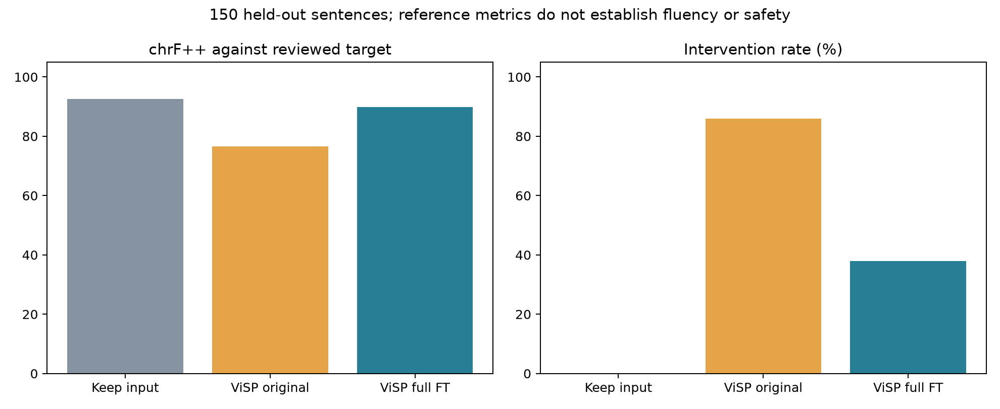
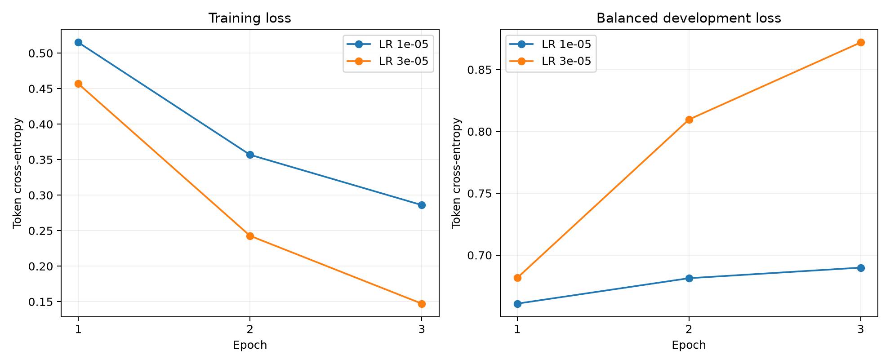

Full fine-tune ViSP — kết quả thực tế
Bộ dữ liệu gồm 1.050 câu đã được nhóm review
Đã train toàn bộ 225.950.976 tham số trên Kaggle T4. chrF++ tăng so với ViSP gốc; chưa vượt baseline giữ nguyên và chưa có judgments để kết luận chất lượng biên tập.
150 câu test
| Hệ thống | chrF++ | Khớp target | Can thiệp |
|---|
| identity | 92.56 | 106/150 | 0% |
| visp_base | 76.59 | 23/150 | 86% |
| visp_full | 89.79 | 67/150 | 38% |


Diễn giải và giới hạn
Đã chạy full fine-tune trên Kaggle Tesla T4, Version 2, thành công sau 12.49 phút. Cập nhật toàn bộ 225.950.976 tham số, không dùng LoRA. Hai cấu hình đều dừng sau epoch 3 theo early stopping; chọn learning rate 1e-5, checkpoint epoch 1 bằng balanced dev loss.
So với ViSP gốc, model sau fine-tune khớp reference tốt hơn trên toàn bộ test và sửa ít hơn. Tuy nhiên, baseline giữ nguyên vẫn có chrF++/exact match cao hơn; riêng nhóm target cần đổi, exact match của model fine-tune thấp hơn model gốc. Chưa có judgments đầu ra để kết luận câu tự nhiên hơn hoặc giữ nghĩa tốt hơn.
Mức tăng chrF++ so với model gốc: +13,20 điểm. Exact match tăng từ 23 lên 67 câu. Can thiệp giảm từ 86% xuống 38%. Trong 44 target thay đổi, chrF++ tăng từ 68,66 lên 75,60 nhưng exact match giảm từ 5 xuống 1. Không đồng nhất tỷ lệ sửa ít hơn với giảm harm; target khác input cũng không tự chứng minh input có lỗi.
697 train (221 thay đổi / 476 giữ), 141 dev (73/68), 150 test (44/106), tách theo tác phẩm. Pilot và 13 câu nguồn mơ hồ được tách riêng. Có 0 mẫu vượt giới hạn token trong lượt chạy. Target bao gồm bản sửa tay, không chỉ các ứng viên cũ. Prefix sentence-paraphrase:, input mức câu; ngữ cảnh dành cho reviewer.
Train sampling cân bằng hai nhóm: 952 lượt/epoch. Batch 2, accumulation 8, effective batch 16, FP32, AdamW, gradient checkpointing, seed 42. Hai learning rate 1e-5 và 3e-5, tối đa 6 epoch, patience 2; hai run đều có dev loss tốt nhất ở epoch 1. Loss train tiếp tục giảm trong khi dev loss tăng, phù hợp dấu hiệu overfit trên tập nhỏ.
Baseline gốc và model sau fine-tune được sinh lại bằng cùng beam search 5, không sampling, một output, max_new_tokens=512. Không dùng candidate cũ beam-sampling để thay baseline. Không có output lỗi/rỗng/cắt cụt trên test trong lượt này.
Full training proof: 257/257 tensor có gradient; 253/257 phần trọng số lấy mẫu để kiểm tra đã thay đổi ở bước được đo. Toàn bộ tham số requires_grad=True. Đây là bằng chứng full fine-tune, không phải chỉ train bộ chọn hoặc adapter. Không cần mọi phần tử trọng số thay đổi sau một optimizer step.
Kaggle đã kiểm tra nạp lại full weights và sinh lại ba câu cho cùng raw output. Local kiểm thử optimizer/checkpoint/resume dùng tiny T5, được ghi riêng và không tính như huấn luyện ViSP. Version 1 gặp lỗi assertion do bước đầu warmup có learning rate 0; Version 2 đã sửa kiểm tra và chạy thành công.
Tổng runtime notebook: 749.2 giây. Chỉ sử dụng cuda:0 để tính toán dù Kaggle cấp T4 x2. Runtime gồm setup, kiểm thử, tải model, train hai cấu hình và đánh giá; không gọi toàn bộ thời gian này là training time.
Model fine-tune có latency sinh p50=439.7 ms, p95=858.3 ms/câu sau warmup; gồm tokenization và generation. VRAM tổng của GPU được ghi trong environment.json; peak VRAM chưa được đo trong run này.
JFLEG/SEEDA là tài nguyên và phương pháp tham khảo đánh giá, không có hai checkpoint riêng được train. Đã tạo 300 phiếu A/B (150 câu × ViSP gốc/sau fine-tune), cùng phiếu chỉnh sửa ký tự. Ratings tự nhiên, giữ nghĩa, needs_edit, harm và ưu tiên đều pending. Chỉ tính safe improvement, harm, clean harm, edit precision khi có nhãn phù hợp; không tự sinh điểm từ reference.
Test đã được xem trong thí nghiệm bộ chọn trước. Đây là so sánh hồi cứu trên các tác phẩm giữ riêng với nhãn hiện có, chưa phải benchmark mù mới hoặc bằng chứng chất lượng chung cho tiếng Việt. Chỉ có ba tác phẩm test và một seed training. Không điều chỉnh model sau khi xem các con số test này.
Provenance review được giữ trong dữ liệu; số tên thành viên không chứng minh có nhiều người chấm độc lập. Corpus là truyện tiên hiệp/kỳ ảo/huyền huyễn, chưa thực hiện benchmark nguồn Trung và bản dịch chuyên nghiệp.
Báo cáo đầy đủ · Bằng chứng Kaggle